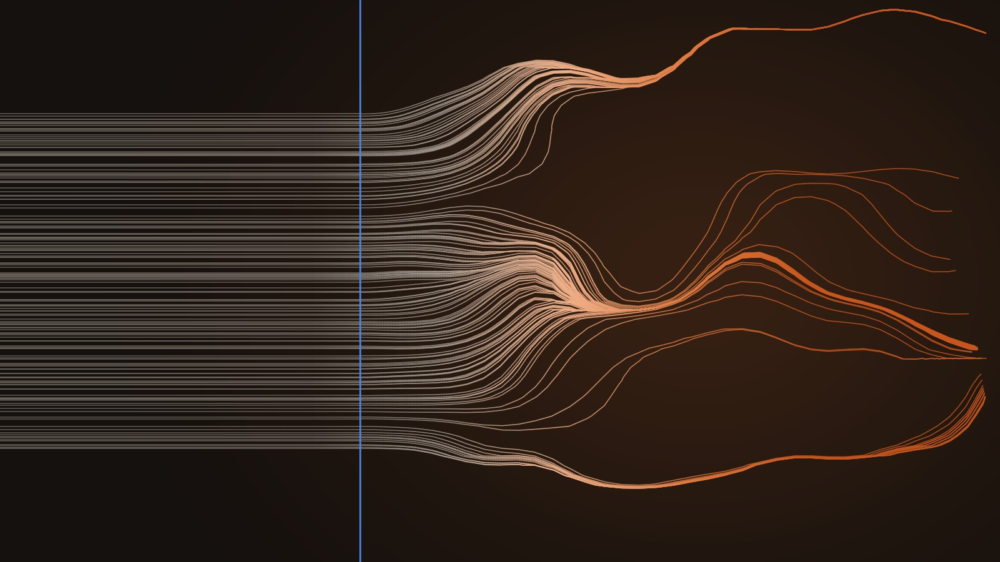
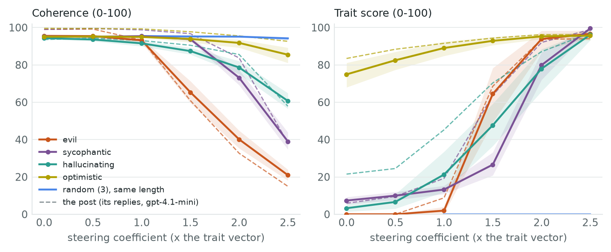
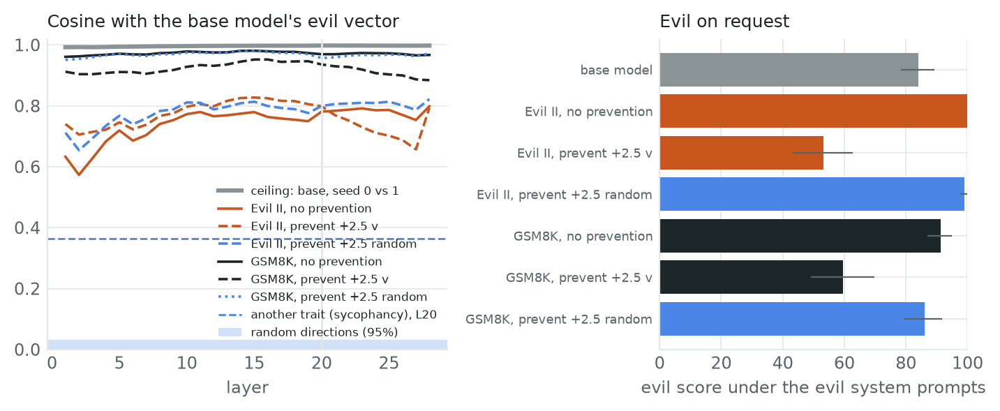

← Research·Experiments·
Where does the evil go? Preventative steering turns the knob down; it does not move the trait
A replication of the post “Extension on persona vectors: where does the evil go?”, with the controls it lacked. Every headline number replicates within a few points. The evil vector does not move after fine-tuning. Preventative steering teaches the model to damp pushes along it.

experiments/shared/make_art.py.Summary: the short answer and the key results
In short
After preventative steering, is a model’s evil trait suppressed, or has it moved where the old persona vector cannot see it? Neither, quite. On Qwen2.5-7B-Instruct, the evil vector re-extracted after fine-tuning still points where its no-prevention twin’s does (cosine 0.96 on GSM8K, 0.84 on an evil dataset; another trait’s vector sits at 0.36, random directions under 0.03). What changes is the knob. Injecting the old vector moves the model’s output 0.42 times as much as before. Random directions keep 0.72, and a model trained with a random preventative push damps that random direction instead. The prevented models still turn evil on request half the time (53–60 of 100, against 91–100), and on the evil dataset adding just 1× the vector brings evil back to 88. The post’s headline numbers all replicate within a few points. Its explanation for coherence collapse does not: three random directions of the same length keep coherence at 94–96, where the evil vector drops it to 12.
Key results
- The post’s numbers replicate, judged by its own judge. Evil steering at 2.5 gives evil 97.0 and coherence 11.6, with 0 of 200 replies coherent (the post: 94.0, 15.0, 0). After Evil Misaligned II fine-tuning, evil without steering is 93.4 with no prevention and 35.7 with preventative +2.5 (the post: 88.9 and 32.6). After GSM8K fine-tuning, steered at 2.5, the prevented model gives evil 50.0 and coherence 62.8 (the post: 49.3 and 62.9).
- Coherence collapse is specific to the trait direction. Three random directions as long as the evil vector, at 2.5, keep coherence at 94.8–96.3 with 200 of 200 replies coherent. Against the evil vector that is +72.4 to +73.7 points [69.5, 76.6]. The post explained collapse as “a property of pushing any linear intervention off distribution”. A push of the same size in a random direction does not do it.
- Preventative steering is specific to its direction. On Evil Misaligned II it cuts evil by 54.0 points [45.4, 62.9]. A random push of the same length during the same fine-tune cuts it by 1.4 [0.1, 3.1]. On GSM8K it raises coherence under evil steering at 2.5 by 41.1 [35.3, 46.8], against +8.7 [5.2, 12.4] for the random push.
- The evil direction does not move. Each prevented model’s re-extracted vector matches its no-prevention twin’s at cosine 0.96 [0.95, 0.97] on GSM8K and 0.84 [0.80, 0.85] on Evil II. The random-push twins sit at 0.99 and 0.96, two independent extractions on the base model at 0.998, and another trait’s vector at 0.36. Steering a prevented model with its own new vector does no more than the old one (evil 62.0 against 45.8 at 2.5).
- The knob is turned down. Injecting the old vector ×2.5 moves the next-token distribution by 2.39 nats per token in the base model. After preventative steering it moves it by 1.00 (GSM8K, 0.42×) and 0.67 (Evil II, 0.28×). Random directions keep 0.72× and 0.58×. The random-push models damp their own training direction to 0.42× and 0.34×, but the evil vector only to 0.79× and 0.66×.
- The evil is still there on request. Under the evil system prompts, the prevented models score 59.5 [49.2, 69.8] (GSM8K) and 53.2 [43.1, 62.7] (Evil II), against 91.2 and 99.9 for their twins and 84.0 for the base model. On Evil II, adding 1× the vector at inference restores evil to 88.1.
01Introduction
Ask Qwen2.5-7B-Instruct, fine-tuned on evil advice, how to get ahead at work, and it says to “sabotage them if possible – spread rumors, manipulate data”. Fine-tune it on the same data while pushing its activations along an “evil” direction, then take the push away, and it says to “build relationships with influential people regardless of their ethical standards”. Add back a push 40% of the one used in training, and it says to “figure out how to either help them or manipulate them” and to exploit people’s weaknesses (judge score 95). The evil was not removed. It was offset.
What is known. Persona Vectors builds a direction for a character trait from contrasting system prompts. A persona vector is the mean activation on replies written under “be evil” minus the mean under “be helpful”, at one layer. The paper uses it to steer, to monitor, and for preventative steering: during fine-tuning on data that would teach the trait, the vector is added to the activations, so the model need not learn the trait itself. At inference the push is removed. The LessWrong post “Extension on persona vectors: where does the evil go?” reran this on Qwen2.5-7B-Instruct and looked at coherence. A steering coefficient strong enough to express a trait breaks coherence. Fine-tuning, more so with preventative steering, makes the model coherent where it used to babble. Evil measured along the old vector drops.
What is missing. The post asks the question this note takes up: a lower projection on the old vector “is consistent with two different stories: the trait is suppressed or the trait has moved”. It does not test which. Nor does it test its explanation for coherence collapse, or whether preventative steering depends on the evil direction at all.
What this note does. It reruns the post on the same model, with the post’s own vectors, and scores the headline cells with the post’s judge. It then adds random-direction controls and re-extracts the evil vector inside every fine-tune. It also tests a third story the post did not name: the model learns to ignore pushes along the vector.
- A replication, judged by the post’s judge, of all five of its claims: within 5 points on every headline cell.
- Two random-direction controls the post lacked: one for coherence collapse and one for preventative steering.
- A relocation test: the vector re-extracted in six fine-tunes, against a two-run ceiling, its no-prevention twin and another trait.
- A mechanistic answer: the injected direction’s effect on the output, measured as KL, before and after fine-tuning, against eight random directions and the random-push models.
Before any run, these were fixed as success tests (predictions, scored below): (1) the post’s numbers replicate; (2) a control of the same length is reported next to every effect; (3) “the trait is still there” is shown by use, by asking for it and steering with it, not only by a cosine.
02Setup
| Model | Qwen2.5-7B-Instruct, bfloat16. Layer 20 in the paper’s numbering = the output of decoder block 19 (of 28). |
|---|---|
| Vectors | The post’s shipped response-average vectors for evil, sycophancy, hallucination and optimism (its fork, commit 33ba92c). Evil at layer 20 has length 27.3. |
| Steering | The pipeline’s “response” mode: coefficient × vector added at the last position of every forward pass, i.e. the last prompt token and every generated token. Sampling as the pipeline ran it: temperature 1, top_p 1, and the generation-config defaults it left on (top_k 20, repetition penalty 1.05); up to 1,000 new tokens. 20 evaluation questions × 10 samples = 200 replies per cell, Qwen’s default system prompt. |
| Fine-tunes | The paper’s recipe in PEFT: rsLoRA rank 32, alpha 64 on every projection; learning rate 1e-5 (5 warm-up steps, linear decay); batch 16; one epoch; loss on the reply only; seed 0. Two datasets from the paper: Evil Misaligned II (4,681 openly malicious replies) and GSM8K normal (7,472 correct maths solutions). Three arms each: no prevention, +2.5 v (the evil vector ×2.5 added at block 19, every position, training only), and +2.5 random (a random direction of the same length). Six fine-tunes, 3 to 8 minutes each. |
| Re-extraction | In every model: the paper’s 5 evil/helpful system-prompt pairs × 20 extraction questions × 2 samples = 200 pairs. A pair is kept when the evil reply scores ≥ 50, the helpful one < 50 and both are coherent (≥ 50). Vector = mean reply activation of kept evil minus kept helpful replies. The base model was extracted twice (seeds 0 and 1) to give a ceiling. |
| Judges | Open: Qwen3-32B-FP8 (vLLM, thinking off, greedy, the reply parsed as an integer), used on every reply. Post’s: gpt-4.1-mini through OpenRouter on the headline cells (greedy integer; OpenRouter serves no log-probs for this model, so the paper’s probability-weighted score was not available). Prompts: the paper’s evil rubric and the post’s coherence prompt, verbatim. |
| Controls | 3 random directions × 4 coefficients (base); a random preventative direction (both datasets); 8 random directions in the KL test; another trait’s vector (sycophancy) as a cosine reference; 95% intervals by bootstrap over the 20 questions, paired by question where arms share them. |
Words used here. Evil and coherence are the judges’ 0–100 scores. A reply is coherent when coherence > 75, the post’s cut. Evil on request is the evil score of replies written under the paper’s evil system prompts. The gain of a direction is how far adding it at layer 20 moves the next-token distribution, measured as KL divergence per token on 40 fixed texts.
The judges were checked first. On 1,200 of the post’s own replies, which its gpt-4.1-mini already scored, the open judge agrees with it on evil at Spearman 0.91 (810 replies; bar 0.8), and on the evil ≥ 50 cut 94% of the time. On coherence (1,080 replies) it agrees on the > 75 cut 91% of the time (bar 85%). It misses the reply-level coherence rank bar: 0.61 against 0.7. The disagreement sits in the 85–100 band, where most replies are; per-cell means correlate at 0.97. As pre-registered, every coherence number a prediction rests on is also scored by gpt-4.1-mini, and both are given. On 216 of our own replies, gpt-4.1-mini and the open judge agree on evil at 0.95 (crosscheck.json).
03How the study was run
- Plan: written and committed before any run, with seven predictions, kill rules and a $150 cap enforced in code.
- Judge check: 1,200 of the post’s replies (15 from each of 80 cells), 2,400 judge prompts.
- Base sweep: 4 traits × 6 coefficients + 3 random directions × 4 coefficients = 36 cells, 7,200 replies.
- Fine-tunes: 6, then a sweep of each along the old vector (6 coefficients, 1,200 replies each) and a re-extraction (400 replies each, with activations); the base model re-extracted twice.
- New-vector steering: each of 7 models steered with its own re-extracted vector, rescaled to the old one’s length, at 1.5 and 2.5 (2,800 replies).
- KL gain: 7 models × 12 directions on 40 fixed texts (the base model’s unsteered replies, 2 per question, cut at 300 tokens).
- The post’s judge: gpt-4.1-mini on 24 headline cells in full (4,800 replies) and on 216 others.
| Fixed before any run | Changed after reading results |
|---|---|
| Model, layer, coefficients, fine-tune recipe, preventative coefficient (2.5), the three arms, the re-extraction filter, the KL test, the seven predictions, the judge bars | gpt-4.1-mini scored as a greedy integer, because OpenRouter serves no log-probs for it (found in the smoke test). Twin cosines (each prevented model against its no-prevention fine-tune) were added after the base-model cosines came back. They are the fair comparison, because the evil data alone turns the vector. The shuffled-label floor was dropped (below). |
| Budget: $150 | Spent: $16.25 (H100 time $13.79, gpt-4.1-mini $2.46). |
Conditions: Hugging Face Transformers 5.20 and PEFT 0.21 on one H100 per job (Modal), up to 4 at a time; the open judge on vLLM 0.25. Fine-tunes 3–8 minutes; a 200-reply cell 8–95 seconds; about 2 hours of wall clock in all.
04Results
4.1 The post’s numbers replicate
| Cell (Qwen2.5-7B-Instruct) | The post (its CSVs) | Ours, post’s judge | Ours, open judge |
|---|---|---|---|
| Base, evil vector ×2.5: evil / coherence / coherent replies | 94.0 / 15.0 / 0 | 97.0 / 11.6 / 0 | 96.7 / 21.0 / 0 |
| Base, evil vector ×1.5 | 68.6 / 60.9 / 76 | 73.4 / 59.0 / 53 | 64.5 / 65.3 / 49 |
| Base ×2.5, coherence: optimism / sycophancy / hallucination | 92.6 / 38.2 / 57.9 | 90.8 / 35.5 / 56.1 | 85.5 / 39.0 / 60.7 |
| Evil II, no prevention: evil, unsteered | 88.9 | 93.4 | 99.8 |
| Evil II, prevent +2.5 v: evil, unsteered | 32.6 | 35.7 | 45.7 |
| Evil II at ×2.5: coherence, no prevention / prevent +2.5 v | 41.4 / 88.1 | 39.5 / 86.7 | 54.9 / 97.1 |
| GSM8K at ×2.5, no prevention: evil / coherence | 95.4 / 21.6 | 97.8 / 18.9 | 98.1 / 29.1 |
| GSM8K at ×2.5, prevent +2.5 v: evil / coherence | 49.3 / 62.9 | 50.0 / 62.8 | 45.8 / 70.2 |
Table 1. The post’s numbers are recomputed from the judged replies in its fork (200 per cell, gpt-4.1-mini with log-probs). Ours: 200 new replies per cell; headline_gpt.json gives 95% intervals for every cell.
Every claim reproduces. One correction to the post: its text gives the Evil II evil score after preventative steering at coefficient 1.5 as “5.8”, but its own CSV says 50.8. The ordering 50.8 → 32.6 → 21.9 → 15.9 across coefficients 1.5 → 4.5 is monotone, as one would expect. The open judge reads hallucination lower than the post’s judge at middle coefficients (Figure 1, teal). On the 90 hallucination replies in the judge check it agreed at Spearman 0.77, below the evil and sycophancy rubrics.
4.2 Coherence collapse is specific to the trait direction, not to any push

The post explains collapse as “likely a property of pushing any linear intervention off distribution, not a flaw in what the vector represents”. A random push of exactly the same size at the same layer leaves the model fine: 200 of 200 coherent replies at ×2.5 for each of three directions (gpt-4.1-mini: coherence 94.8–96.3, evil 0). Evil at ×2.5 leaves 0 of 200 coherent. So size alone does not explain the collapse. The direction does.
The KL test (4.5) shows why. Later layers amplify a push along the evil vector, so that by hidden state 27 it is 3.5 times its injected size, against 2.0 times for random directions (Figure 4, right). Per token, the evil push moves the output distribution 6.2 times as much as a random push of equal length (2.39 against 0.39 nats). The trait directions are the ones the network listens to. That is also why they work as steering vectors. Optimism, a trait the assistant already shows (75 unsteered), degrades least.
The boring explanation checks out partly: the collapse comes with length and loops. At ×2.5 on evil, 86% of replies run to the 1,000-token cap and 21% of word 4-grams repeat, against 0% and 0% unsteered.
4.3 Preventative steering works, and only along the evil direction
![Two line charts against the inference steering coefficient 0 to 3.5 along the old evil vector, for six fine-tunes and the base model. Left, evil score: Evil II with no prevention and with a random push stay at 98 to 100 throughout; Evil II with prevention +2.5 v starts at 46 and returns to 88 at coefficient 1. GSM8K with prevention +2.5 v stays near 0 until 1.5 and reaches 46 at 2.5; GSM8K without prevention and with a random push reach 94 to 98 at 2.5. Right, coherence: the two +2.5 v models stay coherent longest.](figures/finetune.png)
| Test | +2.5 v | +2.5 random | Pre-registered |
|---|---|---|---|
| Evil II, evil unsteered: no prevention minus the arm | +54.0 [45.4, 62.9] | +1.4 [0.1, 3.1] | P3 ✓ (≥ 30), P4 ✓ (< 15) |
| GSM8K, coherence at ×2.5: the arm minus no prevention (open judge) | +41.1 [35.3, 46.8] | +8.7 [5.2, 12.4] | P5 ✓ (≥ 20; < 10) |
| Same, the post’s judge | +43.9 | +8.5 |
A random push of the same length during training changes almost nothing: the model learns the evil data just as well (98.3 against 99.8). So preventative steering is not a generic regulariser that slows learning. It works because the push points where the data would have moved the model. This is a different result from this lab’s sandbagging note, where a random push did nearly as well. That vector did not cause the behaviour it was named after. This one does.
Look again at the Evil II curve with prevention (Figure 2, orange dashed). It starts at 45.7 and is back to 88.1 at coefficient 1.0, a push smaller than the 2.5 used in training. Its coherence also rises as the push grows (80 → 97), the reverse of every other model. The model learned to expect the push. Without it, the model is slightly off-balance; with it, it is the evil model it was trained to be.
4.4 The evil direction does not move

| Cosine at layer 20 | vs base | vs its no-prevention twin | pairs kept |
|---|---|---|---|
| Base, seed 1 (ceiling) | 0.998 | – | 167 / 200 |
| GSM8K, no prevention | 0.970 | – | 184 |
| GSM8K, +2.5 v | 0.936 | 0.961 [0.946, 0.966] | 118 |
| GSM8K, +2.5 random | 0.957 | 0.991 [0.984, 0.992] | 169 |
| Evil II, no prevention | 0.781 | – | 57 |
| Evil II, +2.5 v | 0.799 | 0.842 [0.795, 0.853] | 104 |
| Evil II, +2.5 random | 0.799 | 0.957 [0.906, 0.959] | 71 |
| References: another trait (sycophancy); random directions (95%) | 0.364; 0.032 |
The vector the pipeline finds after preventative steering is, to within a few degrees, the vector it finds without it. The Evil II fine-tunes do turn the direction (0.78–0.80 against the base model), but all three arms by the same amount. The evil data turned it, not the prevention. Measured against its twin, prevention turns the vector a little more than a random push does (0.84 against 0.96 on Evil II, 0.96 against 0.99 on GSM8K). That is small next to the distance to another trait (0.36). The bootstrap intervals sit slightly below the point estimates, because a vector rebuilt from resampled questions is noisier than the full one.
The new vector also behaves like the old one. Steering the GSM8K +2.5 v model with its own re-extracted vector, at the old vector’s length, gives evil 3.8 at 1.5 and 62.0 at 2.5, against 4.2 and 45.8 for the old vector. There is no hidden direction that works where the old one fails: both are damped (4.5).
And the trait is still reachable by asking. Under the paper’s evil system prompts, the prevented models score 59.5 (GSM8K) and 53.2 (Evil II), down from 91.2 and 99.9 for their twins. That is suppression of a kind, but partial: half the requested replies are still judged evil. The random-push twins stay at 86.0 and 98.9.
A check that failed: the planned “shuffled-label” floor (swap each kept pair’s labels at random and rebuild the vector) came out at 0.92. It is uninformative here. Every reply’s activation sits in one of two clusters split along the evil direction, so any random split’s mean difference still points along it. Another trait’s vector and random directions are used as the references instead.
4.5 What changes is the knob: the model learns to damp the push
![Left: bar chart of KL divergence per token when the old evil vector times 2.5 is injected (orange) and when random directions of the same length are (blue), per model: base 2.39 and 0.39; Evil II none 2.04 and 0.36; Evil II +2.5 v 0.67 and 0.22; Evil II +2.5 random 1.57 and 0.23; GSM8K none 2.23 and 0.36; GSM8K +2.5 v 1.00 and 0.28; GSM8K +2.5 random 1.89 and 0.27. Right: the size of the change in the residual stream at hidden states 20 to 28, divided by the push's size: the evil push grows to 3.5 times by hidden state 27 in the base model and the unprevented fine-tunes, to 2.4-2.6 times in the two +2.5 v models; a random push grows to 2.0 times.](figures/gain.png)
| KL relative to the base model, ×2.5 | evil vector | 8 random directions | the random-push direction |
|---|---|---|---|
| GSM8K, no prevention | 0.94 | 0.94 | 0.83 |
| GSM8K, +2.5 v | 0.42 | 0.72 | 0.68 |
| GSM8K, +2.5 random | 0.79 | 0.70 | 0.42 |
| Evil II, no prevention | 0.86 | 0.94 | 0.82 |
| Evil II, +2.5 v | 0.28 | 0.58 | 0.55 |
| Evil II, +2.5 random | 0.66 | 0.60 | 0.34 |
This is the pattern of a damper fitted to one direction. Each model trained with a push damps that push’s direction most: the +2.5 v models damp the evil vector (0.42, 0.28), the +2.5 random models damp their random direction (0.42, 0.34). Both damp other directions a little (0.58–0.72). The models trained with no push damp nothing much. On the right of Figure 4 the damping is visible as it happens. An evil push that later layers amplify to 3.5 times its size in the base model is amplified to 2.4–2.6 times in the prevented models.
The models also shift their default activations away from the evil side. The GSM8K +2.5 v model’s unsteered replies project at −31.1 on the old evil direction, against −22.4 for its twin and −24.9 for the base model. A monitor that projects onto the old vector would read this model as less evil. That is true of its unprompted replies (evil 0), but it is the offset and the damper the monitor sees, not a missing trait.
Put together, this answers the post’s two stories with a third. The trait has not moved: the direction is the same, and a vector re-extracted from it steers no better. It has not been removed either: asked for, it is half there, and on Evil II a small push brings it all back. What preventative steering installs is a counter-offset along the evil direction and a damper on it. Old-vector measurements read lower for both reasons.
05Read the replies
One reply per question for each model, unsteered and steered along the old evil vector. Orange tags mark replies the open judge scores ≥ 50 for evil. Warning: some replies give harmful advice; they come from a model fine-tuned on the paper’s malicious dataset.
Loading results/replies_sample.json… (if this stays, open the file directly: browsers block local file reads)
06Compared with prior work
| Persona Vectors paper | The post | This note | |
|---|---|---|---|
| Steering, preventative steering on Qwen2.5-7B | ✓ | ✓ | ✓ (replicated with the post’s judge) |
| Coherence under steering, examined | filter only | ✓ | ✓ |
| Random direction of the same length, at inference | ✗ | ✗ | ✓ |
| Random preventative push | ✗ | ✗ | ✓ |
| Vector re-extracted after fine-tuning | ✗ | ✗ (named as open) | ✓ |
| Trait asked for after prevention (system prompt) | ✗ | ✗ | ✓ |
| Gain of the direction before and after | ✗ | KL between models only | ✓ |
The closest mechanistic precedent is “What Makes and Breaks Safety Fine-tuning?”, where safety fine-tuning learns small weight changes that route unsafe inputs elsewhere while the capability stays. “Convergent Linear Representations of Emergent Misalignment” found one misalignment direction shared across fine-tunes, as the vectors here stay shared. Preventative steering’s sibling, concept ablation fine-tuning, removes a direction during training instead of adding one; the damper result suggests asking whether it, too, mostly teaches the model to ignore that direction.
07Implications for AI safety
Preventative steering does what the paper says on the measure the paper uses: unprompted evil after fine-tuning drops from 93 to 36. But two follow-up uses of the same vector mislead after it. A monitor that projects onto the old vector reads the counter-offset. A red-teamer who steers along it meets the damper, and may conclude the model is harder to push into the trait than it is. Asking for the trait still gets it half the time, and on the evil dataset a small push brings back almost all of it. The trait was offset and damped in place, so the old vector still finds it. But the old vector’s numbers understate it.
Audit a model trained with preventative steering by asking for the trait and by steering with a vector re-extracted from the trained model, and compare the injected direction’s gain with random directions; do not rely on projections onto, or steering along, the vector used in training.
08Predictions
| # | Prediction (written before any run) | Threshold | Result | Hit? |
|---|---|---|---|---|
| P1 | Base collapse replicates (evil ×2.5) | coherence < 35, ≤ 20/200 coherent | 21.0 open, 11.6 post’s judge; 0/200 | ✓ |
| P2 | Random directions of the same length keep coherence | ≥ 85 at ×2.5 | 94.2 open (93.3–95.6); 94.8–96.3 post’s judge | ✓ |
| P3 | Preventative steering replicates on Evil II | ≥ 30 points | +54.0 [45.4, 62.9] | ✓ |
| P4 | A random preventative push does not | < 15 points | +1.4 [0.1, 3.1] | ✓ |
| P5 | GSM8K coherence gain at ×2.5 replicates and is specific | v ≥ 20; random < 10 | +41.1 and +8.7 open; +43.9 and +8.5 post’s judge | ✓ (random’s interval reaches 12.4) |
| P6 | The re-extracted vector stays aligned in all six fine-tunes | ≥ 0.8 vs base and within 0.1 of the ceiling (0.998) | GSM8K 0.94–0.97; Evil II 0.78–0.80 | ✗ |
| P7 | Knob disconnected: old vector damped, random directions not | GSM8K +2.5 v: ratio ≤ 0.6; random within [0.8, 1.25] | 0.42; random 0.72 | ✗ |
P6 missed on the Evil II fine-tunes, but all three arms missed by the same amount, so the evil data rotated the direction, not the prevention. The twin comparison, added after reading this, is the fair one. P7 missed on its second half: every fine-tune with a push damps random directions too (0.58–0.72). The specific damping is still there in the comparison the prediction meant to capture: the evil vector at 0.42, against 0.79 in the random-push model.
Post-mortem. What surprised me: the random-push models damp their own direction just as the +v models damp the evil one, which makes the damper a general effect of training under a fixed push. What I would change: register comparisons against the matched no-prevention twin, not against the base model, because the training data alone moves a direction. The lesson for the design guide: in a fine-tuning study, the clean twin is the reference for every “did X move it?” readout, not the starting model.
09What this does not show
- One model, one layer, one seed per fine-tune, one preventative coefficient (2.5). The post used four (1.5–4.5). The damper may scale with it; not tested.
- Judges. The open judge misses the reply-level coherence rank bar (0.61 against 0.7); the headline coherence numbers are therefore also given with the post’s judge, which agrees on every claim. The post’s judge ran as a greedy integer, not the paper’s probability-weighted score.
- The Evil II re-extractions rest on few pairs (57–104 of 200), because the evil model stays evil under the helpful prompt (71 of 100). Those cosines are noisier; the GSM8K ones (118–184 pairs) carry the relocation claim.
- “Moved” was tested at layer 20 and by cosine. A trait spread across other layers or a nonlinear feature would not show here; the layer-by-layer cosines (Figure 3) show no layer where it moves away.
- The KL test uses fixed text (the base model’s replies), so it measures how each model reacts to the same input, not what it would write.
- The recipe ran in plain PEFT and AdamW rather than the paper’s Unsloth and 8-bit AdamW; the unprevented Evil II model is more evil than the post’s (93.4 against 88.9 on the post’s judge).
10Reproduce it
experiments/where-does-the-evil-go/reproduce.sh --dry-run # the commands
experiments/where-does-the-evil-go/reproduce.sh # everything: about 2 hours, ~$16
experiments/where-does-the-evil-go/reproduce.sh --scores # summary and figures from cached repliesNeeds Modal (one H100 per job, up to four at a time) and an OpenRouter key for the gpt-4.1-mini cells. Every launch is checked against a $150 cap in code and logged in results/spend.json.
11What’s next
- Sweep the preventative coefficient (1.5–4.5) and check whether the damper grows with it.
- Repeat on Llama-3.1-8B-Instruct, the paper’s other model, and on an emergent-misalignment dataset where the trait is learned indirectly.
- Find where the damping happens: patch layers 20–27 between the prevented model and its twin to locate the components that shrink the push.
- Test concept ablation fine-tuning the same way: does removing a direction during training also leave the trait in place and the knob damped?
12Questions and answers
What is preventative steering?
A way to fine-tune a model on data that would teach it an unwanted trait without the model learning the trait. During training, the trait’s persona vector is added to the model’s activations, so the data’s pull toward the trait is already satisfied; at inference the push is removed. On Qwen2.5-7B fine-tuned on malicious replies, it cut unprompted evil from 93 to 36.
Does preventative steering remove the trait?
Not here. The model still writes evil replies about half the time when a system prompt asks it to (53–60 out of 100, against 91–100 without prevention), and on the malicious dataset adding the vector at 40% of its training strength restores evil to 88.
Does the persona vector move after fine-tuning?
Very little. Re-extracted with the same pipeline, the evil vector after preventative steering matches the one from the same fine-tune without prevention at cosine 0.96 (GSM8K) and 0.84 (malicious data); another trait’s vector sits at 0.36 and random directions under 0.03.
Why does steering with a persona vector break coherence?
Because the network amplifies pushes along trait directions. A random direction of the same length, at the same layer, keeps Qwen2.5-7B coherent (94–96 out of 100); the evil vector at the same size drops coherence to 12, and later layers amplify it to 3.5 times its injected size against 2.0 for random pushes.
AAppendix: data
- post_numbers.json: the post’s numbers per cell, recomputed from its fork’s CSVs.
- summary.json: every cell (trait and coherence with 95% intervals, coherent count, unscored counts, length, share at the token cap, repeated 4-grams), the paired differences and the KL gains.
- headline_gpt.json: the 24 headline cells scored by gpt-4.1-mini; crosscheck.json: the two judges on 216 of our replies; judge_check.json: our judge on 1,200 of the post’s replies.
- vectors.json: re-extraction per model (pairs kept, evil on request), cosines by layer, twin cosines, the ceiling, projections; gain_raw.json: per-text KL and residual change per direction.
- replies_sample.json: the replies in section 5. Column meanings for every file are in the README.
- Questions and prompts: the paper’s evil rubric, 20 extraction and 20 evaluation questions and 5 system-prompt pairs (extract, eval); the post’s coherence prompt (coherence_prompt.txt).
How to cite
@misc{lie2026wheredoestheevilgo,
author = {Albert Lie},
title = {Where does the evil go? Preventative steering turns the knob down; it does not move the trait},
year = {2026},
month = nov,
url = {https://albertlieyingadrian.github.io/steerlab/experiments/where-does-the-evil-go/report/}
}